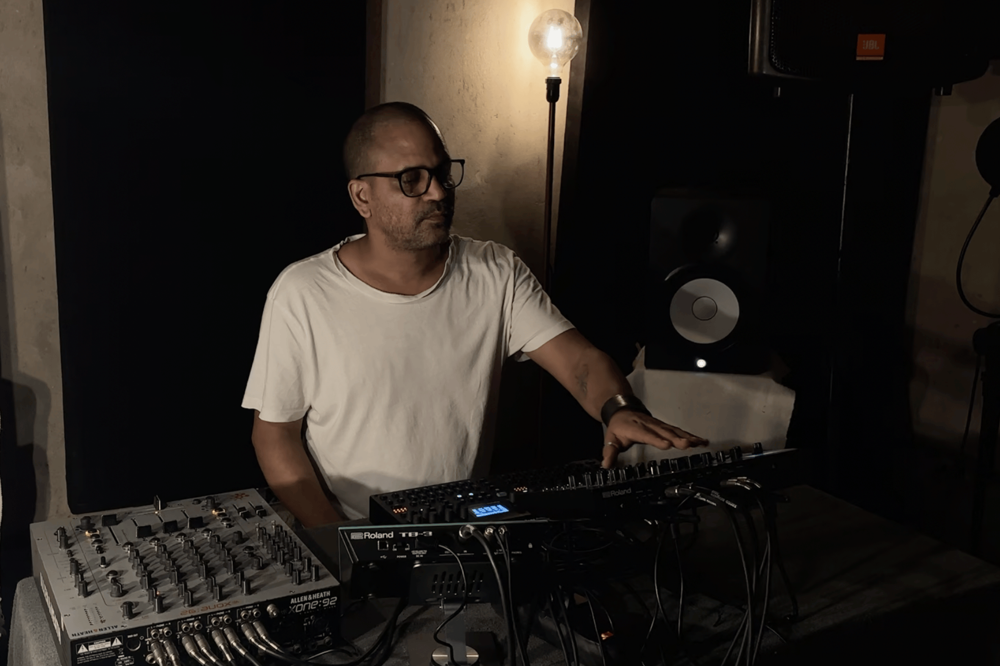
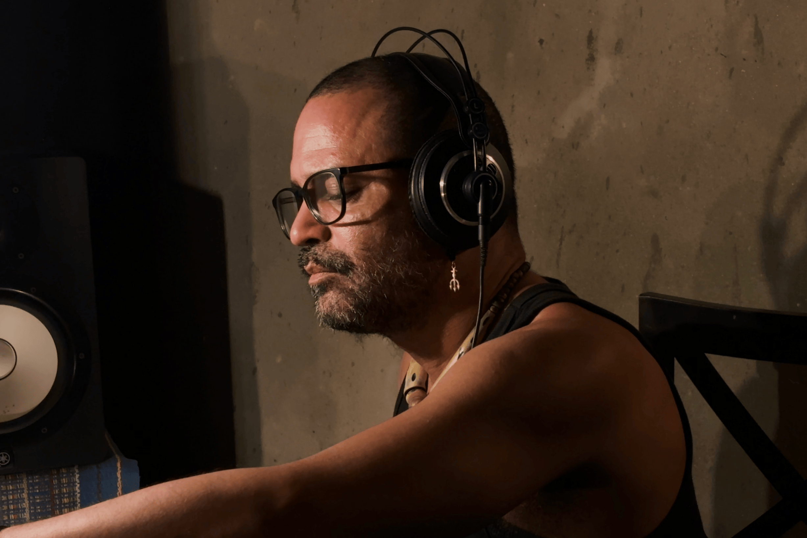

SONA apresenta UIRÁ DOS REIS
PULSO E RUÍDO EM ESTADO DE LIBERDADE

Cearense criado no subúrbio carioca de Campo Grande, e radicado em Fortaleza desde os 15 anos, Uirá dos Reis construiu uma trajetória artística que questiona fronteiras rígidas entre linguagens. Ao longo de mais de 25 anos de carreira, transitou entre poesia, música, performance audiovisual, curadoria e produção cultural. Seu percurso é profundamente enraizado no experimentalismo periférico, no improviso como linguagem e resistência e na tradição da canção popular.
Nos últimos anos, essa multiplicidade parece ter ganhado um novo foco. Uirá vem afunilando sua experiência em direção a uma produção voltada à música eletrônica feita exclusivamente com hardware, ou seja, equipamentos físicos como samplers, sintetizadores e drum machines. Nesse território, o artista encontra uma maneira de unir três elementos que sempre estiveram presentes no seu trabalho: o ruído, o corpo e a perspectiva negra do mundo. Sua sonoridade atual pulsa no cruzamento entre o ritmo da pista de dança e a densidade da experimentação, num lugar onde o som é, ao mesmo tempo, crítica e celebração.
Tudo começou com o som da palavra. Vindo da literatura, Uirá dos Reis mergulhou na cena de saraus de Fortaleza no fim dos anos 90, período em que a poesia oral se tornava uma forma vibrante de ocupação do espaço público e experimentação estética na cidade. Mas logo percebeu que seus textos pediam outro tempo. Seus poemas começaram a alongar-se, a escapar do formato mais direto das leituras coletivas. Foi aí que decidiu criar trilhas sonoras para a apresentação de seus próprios textos, usando a voz como instrumento e matéria-prima.
Em O Fantástico Mundo do Sr. Hiena e de Suas Criaturas (2011), seu primeiro disco, Uirá grava, manipula e distorce camadas da própria voz, construindo faixas inteiras sem instrumentos musicais convencionais. O disco nasce da influência direta de Adult Themes for Voice (1996), de Mike Patton, um álbum experimental gravado apenas com sons vocais extremos e não convencionais, assim como de coletâneas de poemas gravadas em vinil, como a Antologia Poética de Carlos Drummond de Andrade (1978), cuja sonoridade austera e pausada carrega a tensão entre palavra escrita e voz falada. Nesse encontro entre poesia e ruído, já estava ali o embrião do que viria a ser o cerne da obra de Uirá: uma pesquisa que atravessa suportes, tensiona gêneros e coloca a escuta no centro da experiência sensorial.
O que se desenrolou desde então foi um processo de radicalização estética. Uirá foi abrindo espaço para o ruído, para o improviso e para formas cada vez mais instáveis de composição. Nessa fase, seu ouvido foi moldado por referências do pós-rock de vanguarda e da eletrônica experimental, da tensão nervosa do no wave à arquitetura sonora de Aphex Twin, passando pela distorção controlada do Sonic Youth. Além de exercício de estilo, esse mergulho parece movido por uma necessidade vital de encontrar linguagens capazes de sustentar uma expressão mais visceral, mais indisciplinada e, quando possível, livre.
Esse impulso se refletiu também nas colaborações. Uirá integrou a Mirella Hipster, banda pioneira de noise e improviso livre atuante de 2007 a 2009, formada por quatro “não-músicos”: os irmãos cineastas Luiz e Ricardo Pretti, o filósofo Eduardo Escarpinelli, e Uirá, o poeta do grupo e manipulador de samples e efeitos (inclusive para guitarra, instrumento que usou muito na época). O improviso, nesse contexto, era linguagem compartilhada, uma forma de negociação entre perspectivas distintas.
Com o tempo, Uirá passou a estudar música de forma mais sistemática, mas sem abrir mão da liberdade formal que sempre guiou sua prática. Foi nesse momento que, como compositor, começou a se aproximar mais diretamente da canção brasileira, especialmente do samba e da bossa nova. Em entrevista à SONA, ele comenta: “Tenho muita influência do samba e da música brasileira, principalmente a mais antiga. Tem uma influência muito grande [desses gêneros] na minha produção, por mais que não pareça”. E completa: “Escutei e estudei muito tempo João Gilberto enquanto fazia noise”.
A escuta de João Gilberto, que Uirá já conhecia desde a infância, quando ouvia bossa nova em casa com os pais, exemplifica uma atenção refinada aos detalhes rítmicos e à construção do silêncio como elemento estrutural. Esses elementos, tão presentes na tradição da canção brasileira, atravessam a obra de Uirá mesmo nos momentos mais ruidosos. Como ouvinte, ele sempre esteve próximo da música popular brasileira; o que muda agora é a forma como esses elementos passam a integrar sua linguagem autoral.
Mesmo nos discos de noise, o ritmo permanece como uma camada subterrânea, um pulso secreto que organiza o caos. Essa atenção à microestrutura sonora, às síncopes, aos contratempos, ao balanço interno das faixas, conecta sua produção a uma linhagem menos evidente da música experimental, aquela que, em vez de romper com o corpo, o convoca.
Nesse sentido, é possível traçar um paralelo com a noção de illbient, termo cunhado por DJ Spooky (Paul Miller) nos anos 1990 para descrever uma estética sonora que funde ambient, dub, hip hop e noise. A própria palavra já carrega essa tensão produtiva: ambient, um gênero comumente associado a paisagens etéreas e, muitas vezes, à branquitude eurocêntrica, e ill, expressão do hip hop afro-americano, ligada à gíria de rua e à potência subversiva. Spooky propõe uma escuta dissonante e fragmentada que, mesmo afastada da pista de dança, mantém uma lógica de colagem rítmica e evoca, de maneira oblíqua, a herança sonora afro-diaspórica.
Uirá faz algo semelhante: parte de um campo como o noise, também consolidado como linguagem experimental e majoritariamente branca, para inseri-lo numa escuta marcada pela negritude e pela memória da música popular brasileira. Suas faixas mais ruidosas nem sempre citam diretamente o samba, o funk ou outros ritmos populares, mas revelam um ouvido atento às suas dinâmicas internas. O ritmo, aqui, funciona como um fantasma estrutural, uma tensão subterrânea que orienta a escuta mesmo quando o som parece se desfazer. Em ambos os casos, o corpo não desaparece, apenas é convocado de outros modos, menos óbvios, mas não menos políticos.
Embora o noise e as colagens ainda marquem presença em sua produção, Uirá hoje direciona seu trabalho para a música eletrônica dançante, explorando batidas mais pulsadas e estruturas voltadas à pista. A transição do uso do computador para o hardware dedicado, com equipamentos como os Elektrons Digitone II e o Digitakt II, marcou também uma mudança de pensamento musical. Para Uirá, trabalhar com máquinas físicas exige outra escuta, mais tátil e menos mediada por interfaces genéricas. Nesse sentido, o uso do hardware por Uirá também é coreográfico: sua composição acontece também no gesto, na resposta imediata entre o corpo e a máquina. A pista de dança, nesse contexto, não é apenas destino, mas origem, o lugar de onde emerge a forma sonora.

Suas performances atuais operam numa lógica híbrida. São composições ao vivo que dialogam com a prática do DJ, combinando estruturas prévias com improviso, remix e camadas em tempo real. Isso produz uma tensão interessante entre controle e entrega, entre planejamento e acaso. E é aí que seus gêneros de referência, o techno, o funk brasileiro e o samba, se manifestam como partes de um mesmo mapa afetivo e político.
Para Uirá, esses estilos compartilham uma raiz comum: “vejo o techno, o funk e o samba como pilares da música negra urbana (...) o elo entre eles é, obviamente, a negritude, a celebração do corpo, a celebração da festa”. A afirmação sintetiza uma visão musical que busca compreender esses gêneros como expressões de uma cultura periférica de resistência, onde o corpo e o prazer assumem papel político central. A festa, nesse contexto, não é fuga, mas afirmação. O techno de Detroit, o samba nas rodas suburbanas do Rio, e o funk das favelas brasileiras surgem em contextos de desigualdade social enquanto constroem formas de expressão coletiva baseadas no ritmo, na dança e na afirmação cultural. Ao conectar essas referências em suas performances e composições, Uirá constrói uma rede de ressonâncias que afirma uma escuta negra e periférica, não como citação distante, mas como linguagem viva.
Pela mesma ótica, Uirá também investiga a relação entre som e imagem. Em Vermelho e Preto (2025), sua performance audiovisual mais recente, desenvolvida junto a Gabriel de Sousa e Ivan Timbó, o grupo manipula vídeos em tempo real a partir do som usando o software TouchDesigner. Os visuais reagem à música de forma autônoma e, por vezes, imprevisível, criando um desencaixe entre o que se vê e o que se ouve, que dá força à performance. O projeto combina música eletrônica preta global com percussões tradicionais brasileiras, como samba e batuques de terreiro. A interação entre som e imagem transforma a apresentação numa celebração política da negritude, ao reafirmar a cultura negra como espaço de resistência e criação, unindo tradição e inovação de forma sensível. O lançamento de um disco derivado desse projeto está previsto para o final de 2025.

Além de artista, Uirá também atua como editor, curador e agitador cultural. Em 2010, criou a SuburbanaCo., inicialmente “quase como uma piada” contra o formalismo do mercado da música. Era ele, sozinho, trancado num quarto, com um computador velho e recursos escassos, fundando um selo como quem cria um mundo alternativo onde sua produção pudesse existir. Mas o gesto, ainda que nasça como provocação, logo se torna plataforma real. A SuburbanaCo. cresceu, consolidou-se como referência no circuito experimental de Fortaleza e passou a lançar obras de outros artistas da cena local. Um desses lançamentos foi o disco Saboteur (2012), de Vitor Colares, publicado em vinil, um formato ainda raro para artistas novos na cidade. Numa época em que a febre do vinil em Fortaleza estava mais ligada ao ao mercado nostálgico de reedições, lançar um trabalho autoral e contemporâneo nesse suporte se faz um gesto político em direção ao novo.
Gravadas especialmente para a SONA, as duas faixas inéditas que acompanham esta entrevista mostram diferentes lados do trabalho atual de Uirá. Bad-add Volt-Mix tem um tempo mais contido, com batida sincopada e percussão que criam um clima de mistério sem perder o balanço dançante. A faixa tem uma atmosfera noturna, quase cinematográfica, lembrando trilhas para dirigir de madrugada. Os detalhes rítmicos e as pequenas camadas de som criam tensão e expectativa, funcionando como um warm-up para algo maior, sem pressa, mas com presença.
“Ninguém é de Ferro”, em 170 bpm, acelera o ritmo e tem uma abordagem mais cerebral e eletrônica. Com influências de IDM e drum and bass, a faixa mistura padrões complexos com pequenas variações que quebram a repetição. O resultado é uma música que funciona tanto na pista quanto para quem quer ouvir atentamente cada detalhe, equilibrando precisão e improviso.
Juntas, as duas faixas mostram bem o espírito de experimentação de Uirá, buscando equilíbrio entre estrutura e liberdade, entre repetição e surpresa, entre dança e escuta atenta. Talvez o ponto central dessa fase seja exatamente esse: criar música que exista no atrito, entre estilos, formas de ouvir e tempos diferentes.
No caso de Uirá, a liberdade virou método. Sua trajetória sugere que independência e experimentação, no campo das artes, não é bandeira moral, mas uma posição tática, uma escolha que se renova a cada projeto, a cada disco, a cada performance ao vivo. E talvez seja justamente por operar nesse lugar de instabilidade que sua música soa tão viva. Ela insiste em existir, apesar, e através, das contradições.